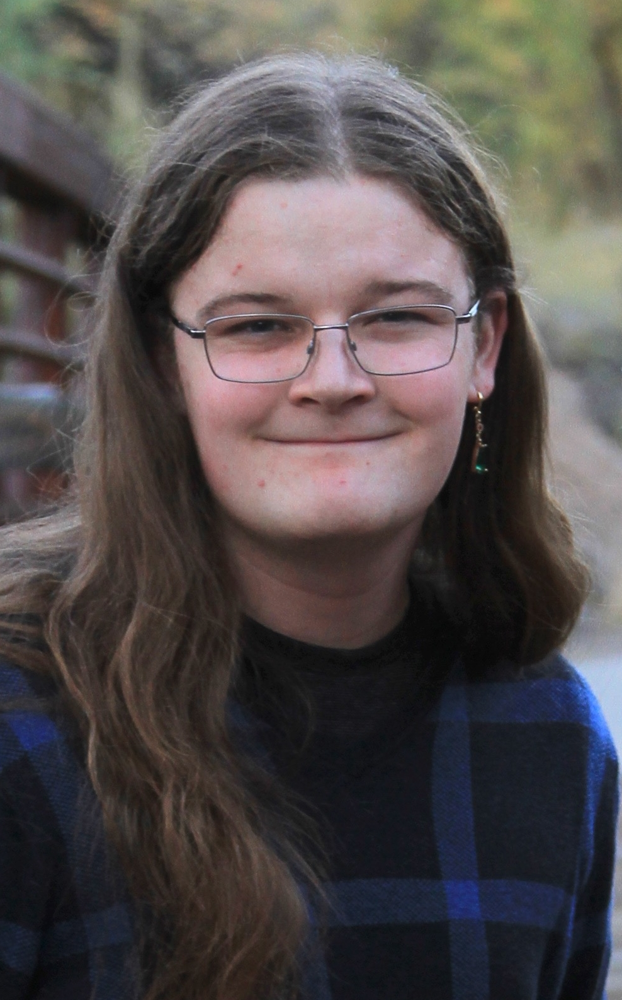

Currently primarily interested in programming language design and program analysis / verification. Especially interested in homogenous metaprogramming, natural deduction, and SMT solver design.
Received a Bachelor's in Computer Science from Colorado Mesa University, with dual undergraduate research in static source code analysis and molecular dynamics. Currently a graduate student of computer science at the University of Colorado Boulder in the CUPLV lab. Plans to pursue a PhD in program verification and a career in academia.
Besides research, also experienced in data analysis, software engineering, and high-performance computing.